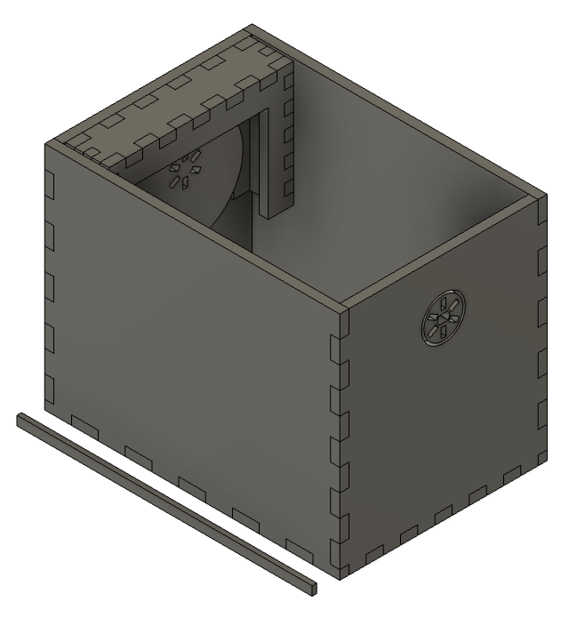
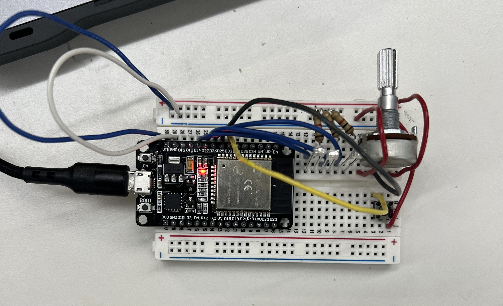
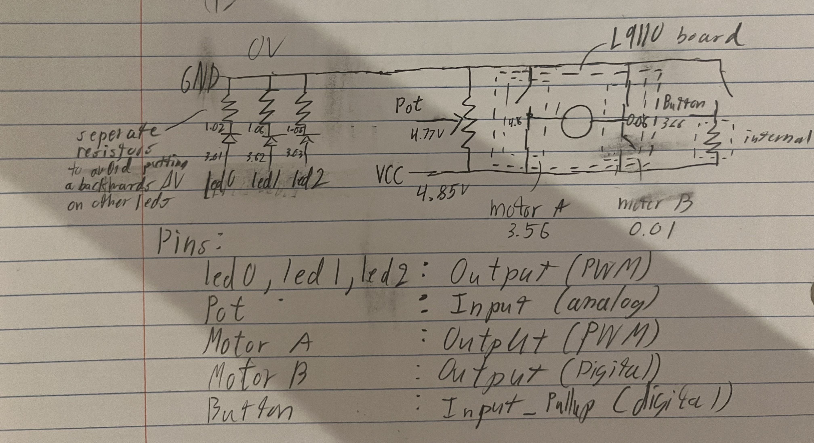

<div class="textcontainer">
<p class="margin"> </p>
<h3>Day 3: Hand Tools and Fabrication</h3>
<h4>Kinetic Sculpture</h4>
Decided to make a wave machine where each wave section is resting on separate cams<br>
note: only 1 wave section shown of 6, shaft not shown
<p></p><br>
Then, after some minor adjustments and a lot of pain around the shaft (replacing cardboard shaft pieces with small wood dowels (sharpened to a point at one end) and resorting to hot glue to secure the dowels to the cardboard screwed onto the motor), you get this:<br>
<video width="800" height="600" controls>
<source src="machine_motion.mp4" type="video/mp4">
</video><br>
heres the circuit which powered it (explored more in day 4 (wip)) (connections to L9110 (motorA_A on D13 & motorB_B on D12) & motor not shown)<br>
<p></p><br>
& its diagram, marked up with voltages (at full throttle & default direction):<br>
<p></p><br>
</div>